The cosmic forge where worlds are born.
Not a notes app. Not just a writing app. A second brain. You talk through your ideas, those ideas become worlds, then you write with confidence — knowing every detail is right where it should be.
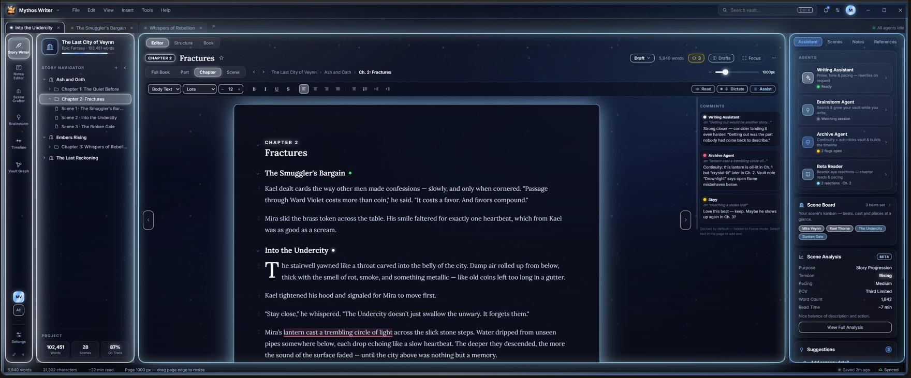
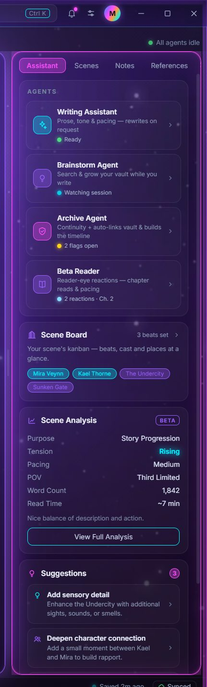
Software worthy of the worlds you dream up.
Sky High Infinite Techwork builds tools for creators who refuse to settle. Our flagship, Mythos Writer, is a local-first desktop app for fiction authors — a structured vault for your stories, a distraction-free editor, and a team of AI agents that help you think, all running on your own machine with your work stored as plain Markdown.
Local-first, always
Everything lives on your machine. No cloud requirement, no subscription, no lock-in — your vault is yours.
Plain Markdown you own
Every scene and note is a Markdown file. Open it anywhere, back it up your way, keep it forever.
Thinking partners, built in
Brainstorm, Writing Assistant, Archive and Beta Reader agents — powered by Claude, or your own local model.
Built to the best bar
Our Liquid Neon craft runs deep — every screen tuned, accessible, and beautiful. Nothing less than the best.
Step 1 · Talk it out
Talk through your ideas.
Open the Brainstorm agent and just think out loud. Describe a premise, a character, a whole mythology — Mythos Writer chats with you like a collaborator, and quietly pulls the characters, locations, factions and items out of the conversation into your vault.
- Conversational story development, powered by Claude
- Auto-extracts facts into real vault entities as you talk
- Send any idea straight into the scene you're writing
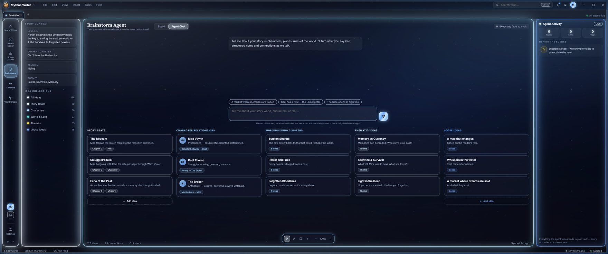
Step 2 · Give it shape
Those ideas become worlds.
Every extracted idea becomes a living entity — a character, location, faction, item, event or concept — wiki-linked across your notes. The Scene Crafter turns loose sparks into structured cast and settings, so your world holds together as it grows.
- Characters, locations, factions, items, events & concepts
- Wiki-link any entity from any scene with
[[Name]] - Notes that stay connected as your mythology expands
Every thread, visible at a glance.
Zoom out and see your world as it really is — a constellation of connected ideas. Trace how a character ties to a place, map cause and effect on a canvas, or watch clusters of thought take shape. Nothing gets lost.
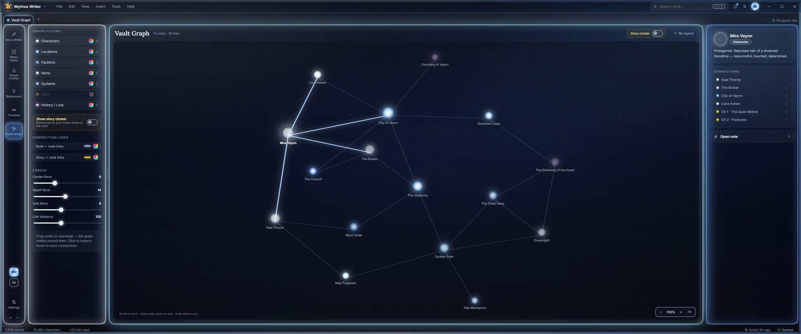
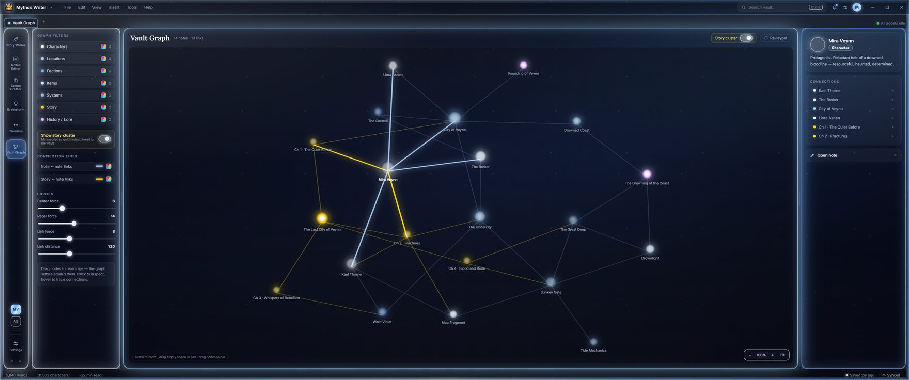
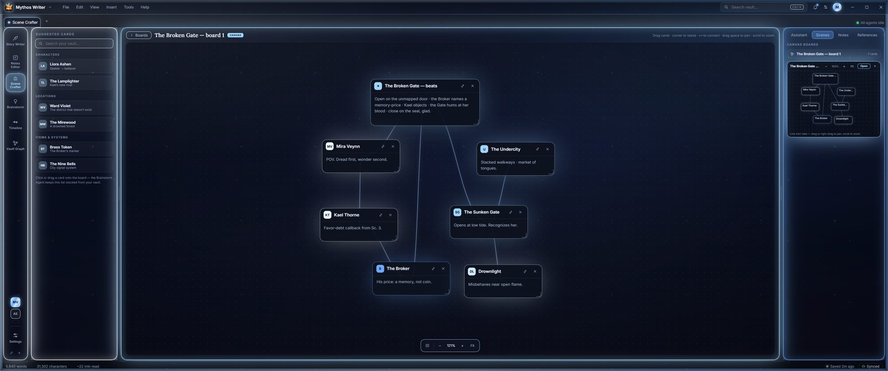
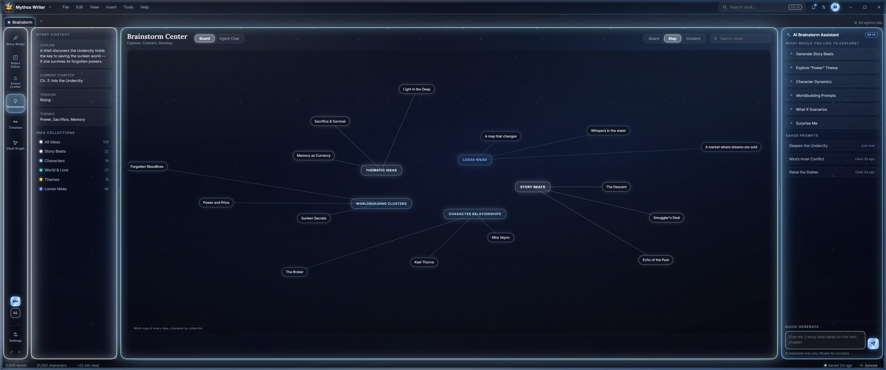
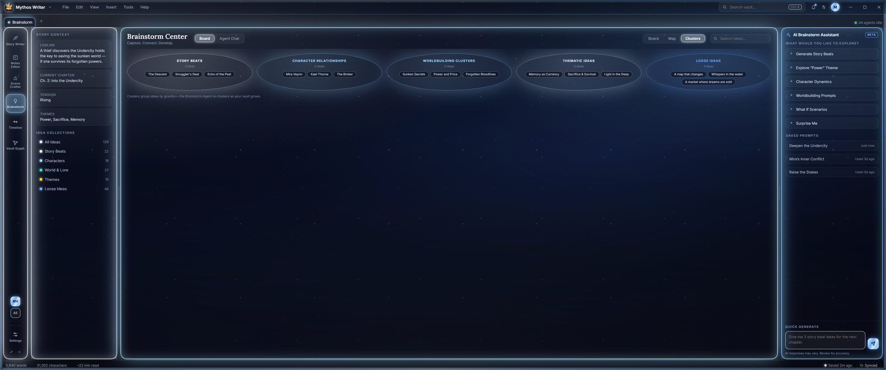
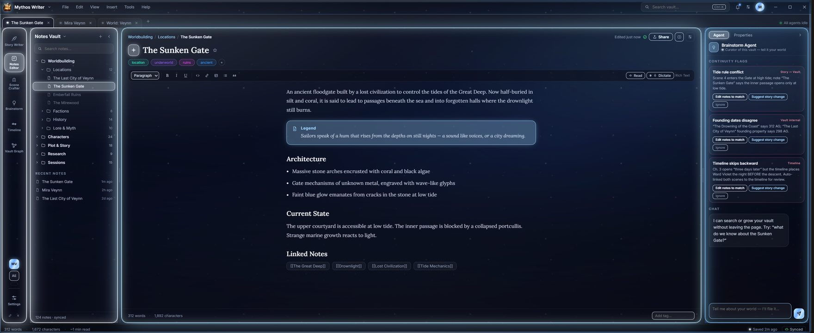
Step 3 · Write
Then write with confidence.
When it's time to write, everything you need is right where it should be. A rich, TipTap-powered editor with focus and distraction-free modes, draft states, WikiLinks and live word counts — wrapped in a manuscript page that glows exactly as much as you want it to.
- Normal, Focus and Edit modes —
Ctrl+Shift+N/F/E - Neon, No-glow, and aged-parchment Scroll page styles
- Draft states, snapshots, and one-click EPUB & DOCX export
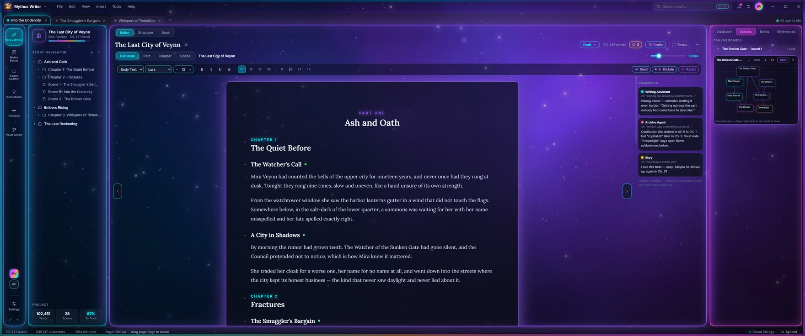
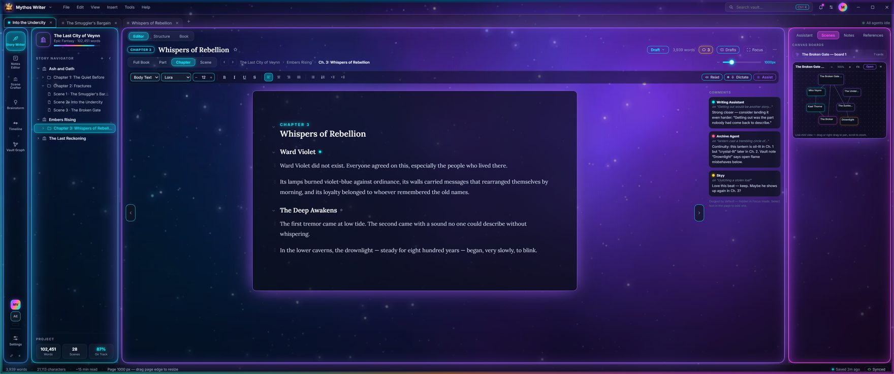
Always at your side
A team of agents, watching your story.
Four specialists sit in your sidebar and keep your world honest — each one focused, each one optional, all of them yours to command.
Writing Assistant
Prose, tone & pacing — rewrites on request, inline as you write.
Brainstorm
Search & grow your vault while you write, capturing ideas as entities.
Archive
Continuity & auto-links your vault, and builds the story timeline.
Beta Reader
Reader-eye reactions — honest takes on your chapters and pacing.
It keeps itself
A timeline that builds itself.
As you write, the Archive agent quietly threads your events into a living timeline — multiple story arcs, side by side, so you can see the shape of your saga without ever maintaining a spreadsheet.
- Multi-track story arcs, auto-linked from your scenes
- Event bars, connection lines, and a constellation view
- Always current — because your story keeps it current
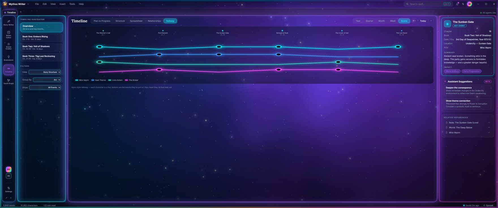
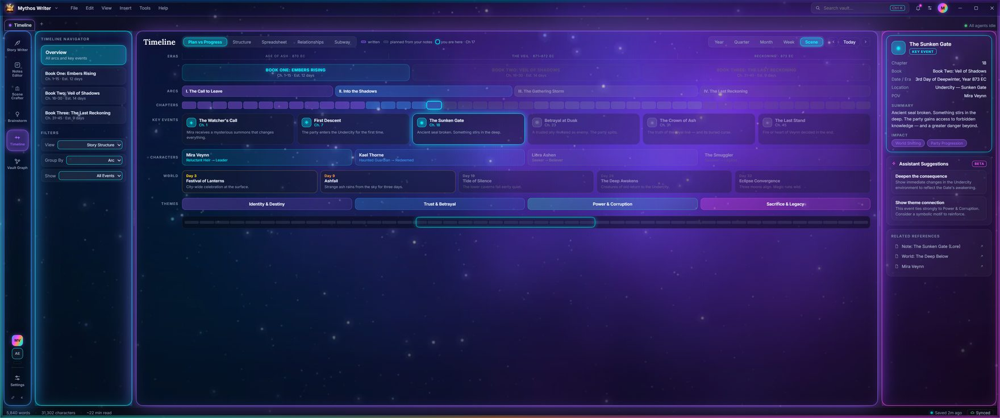
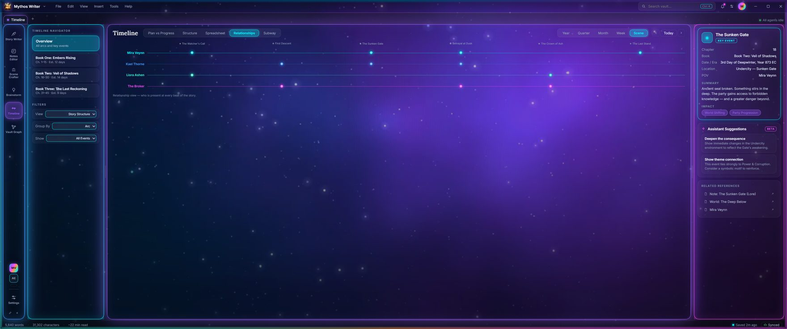
Make it unmistakably yours.
Our Liquid Neon design language gives you ten living presets, six tunable neon color slots, glass panels, animated ambience and a glowing window frame — with a reduce-glow toggle whenever you want calm. Deep space, on your terms.
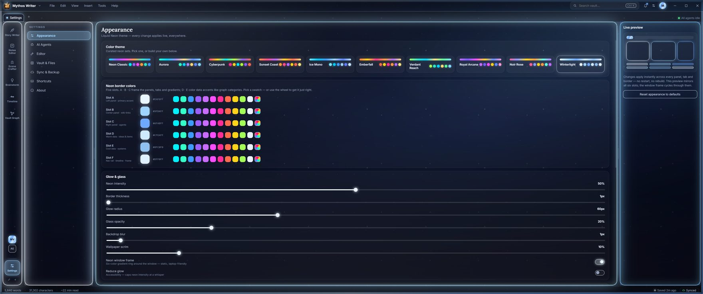
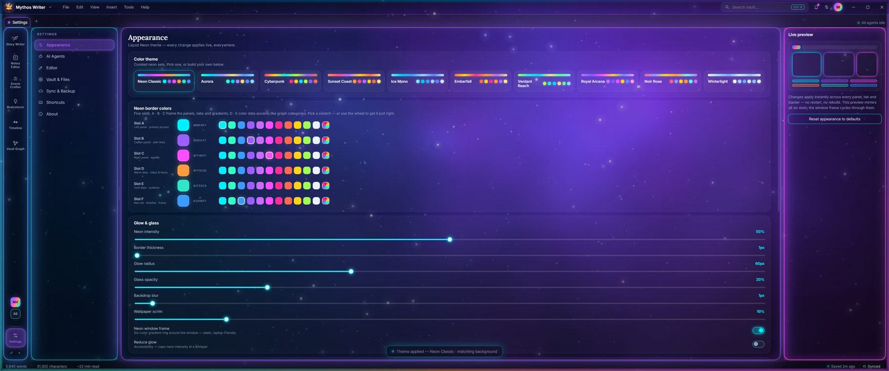
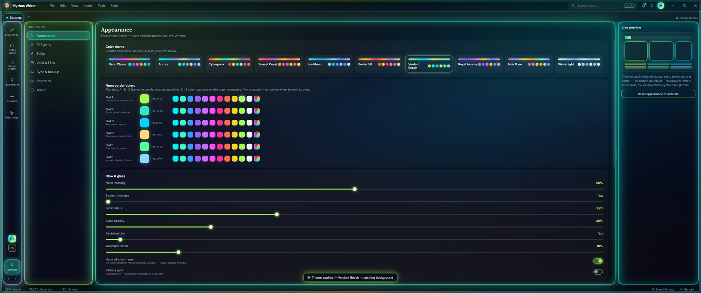
We build nothing less than the best.
This page is our storefront, and Mythos Writer is our proof. We make the tools we wish existed — beautiful, fast, respectful of the people who use them — and we don't ship until they clear that bar. If we're going to build it, we build it right.